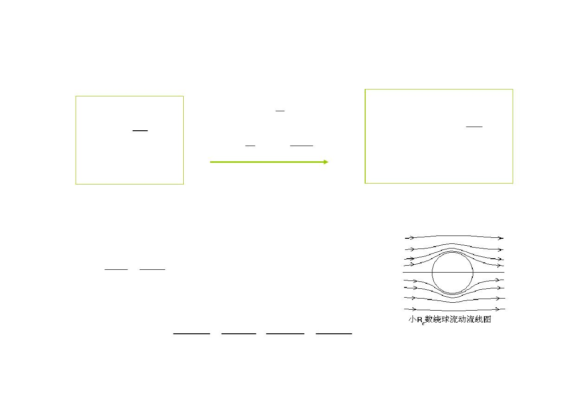
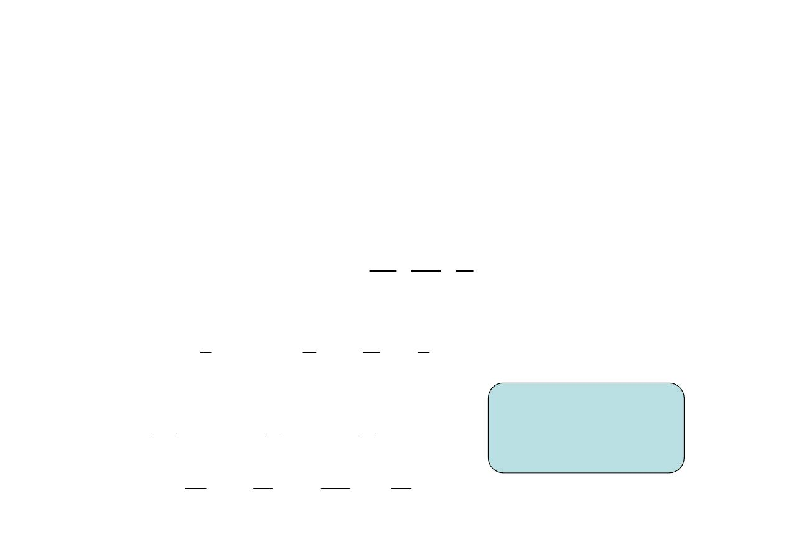
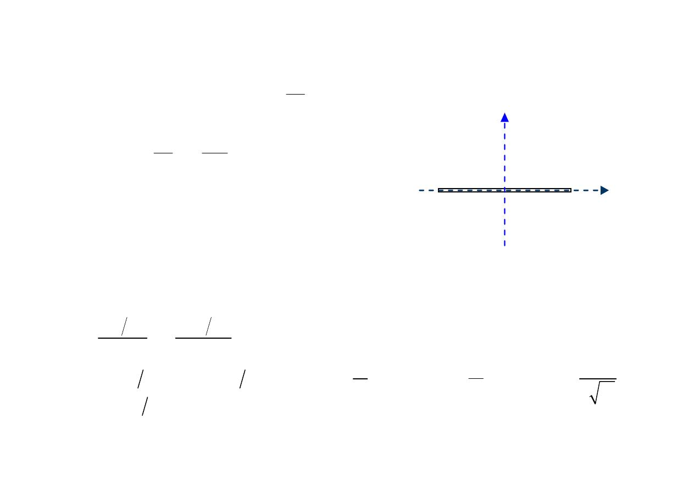
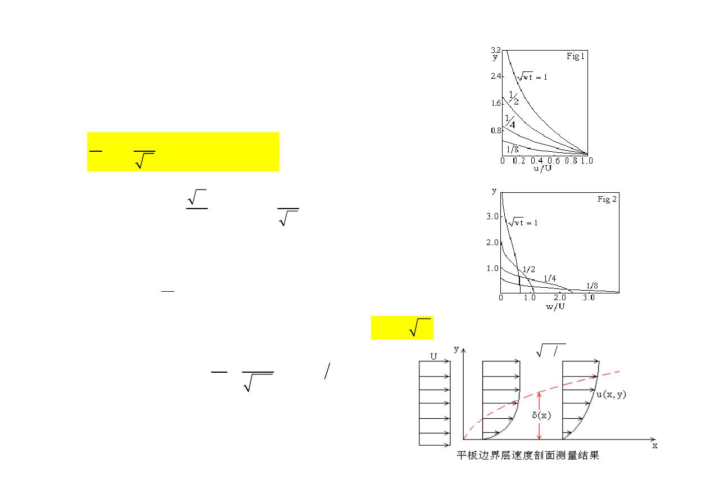
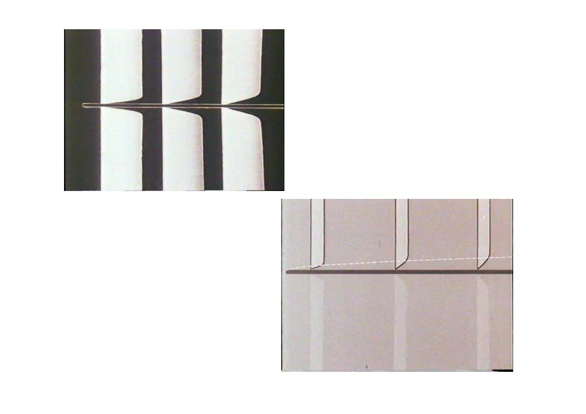
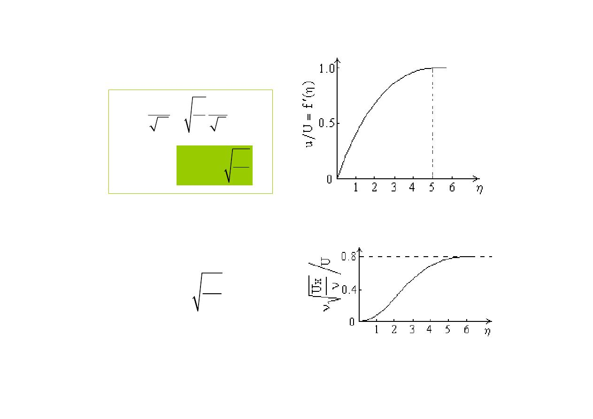

8
本资料已整理为站内 HTML 正文页；本站只展示 HTML、图片和样式，不提供原件。
HTML 正文页12 页图220 KBround357-181103-auth-workflow-proof-20260615
本页是 181103 资料的站内 HTML 正文页，只发布 HTML、图片和样式产物；不提供 PDF、PPT、DOC、ZIP 原件下载链接，也不使用外部预览壳。
资料组流体力学 I 课件
章节线索第1章、第2章、第3章、第5章、第6章、第8章
题型线索计算与例题、简答综合、图像与流动判断、推导证明
复核任务68 个任务；全站真题回到 325/68
读完本 HTML 正文后，回到历年真题按 325 原文小题 / 68 组题拆分复核；不要把资料答案、教材推导和原卷答案证据混写。
正文形式PDF 页图 HTML
站内内容量12 页图 / 74 字符
内容线索8
抽查判定无预览壳、无原件下载链接、无本地路径 href
Round317 深度抽查补充：本页必须直接呈现站内 HTML 正文、页图或转写文本；导航只指向本页锚点和站内入口，不指向 PDF、PPT、DOC、ZIP 原件。







